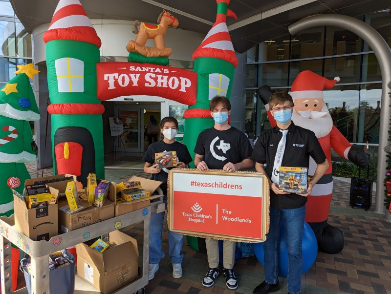

Much of my service is by giving back to the FIRST Robotics Community.
I have mentored FRC teams 8578 and 9418, as well as a number of FLL teams at Mitchel Intermediate and Galatas Elementary.
I also am a volunteer for events by running the technical aspects of the field, putting my networking knowledge to good use.
